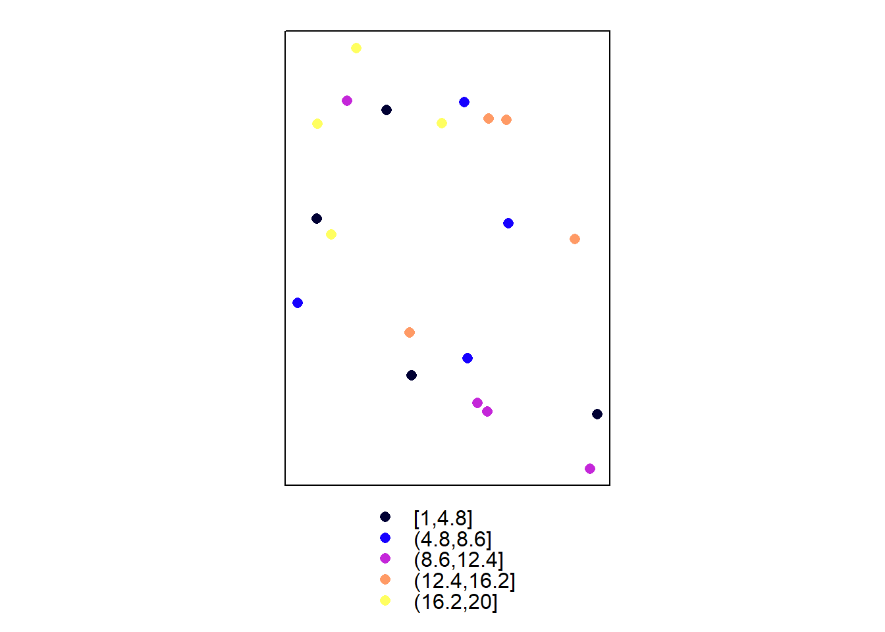
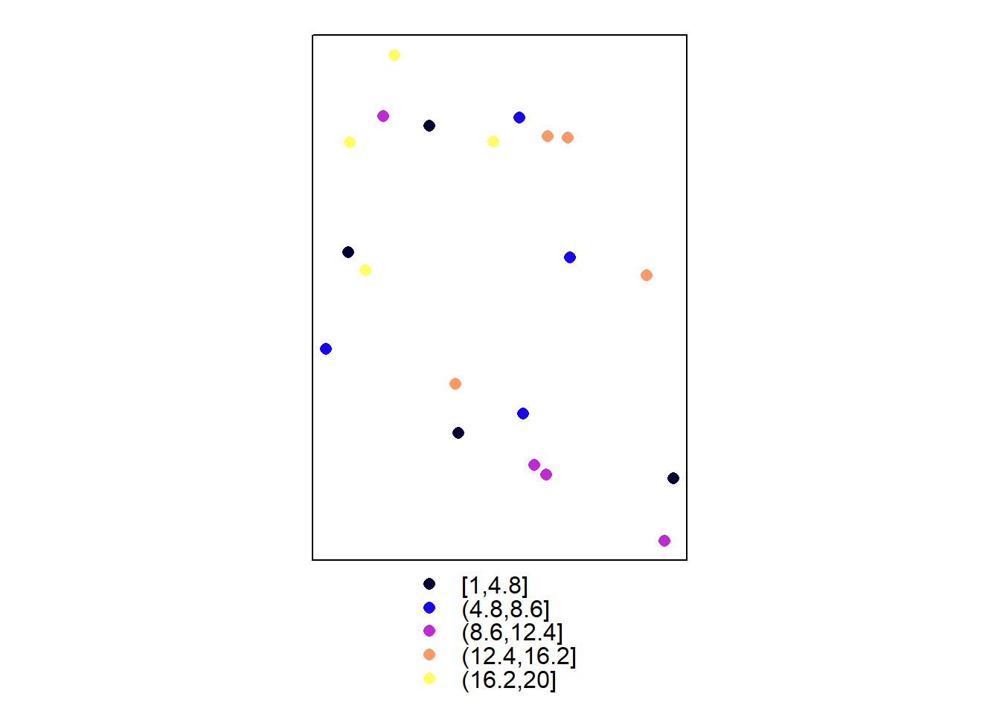
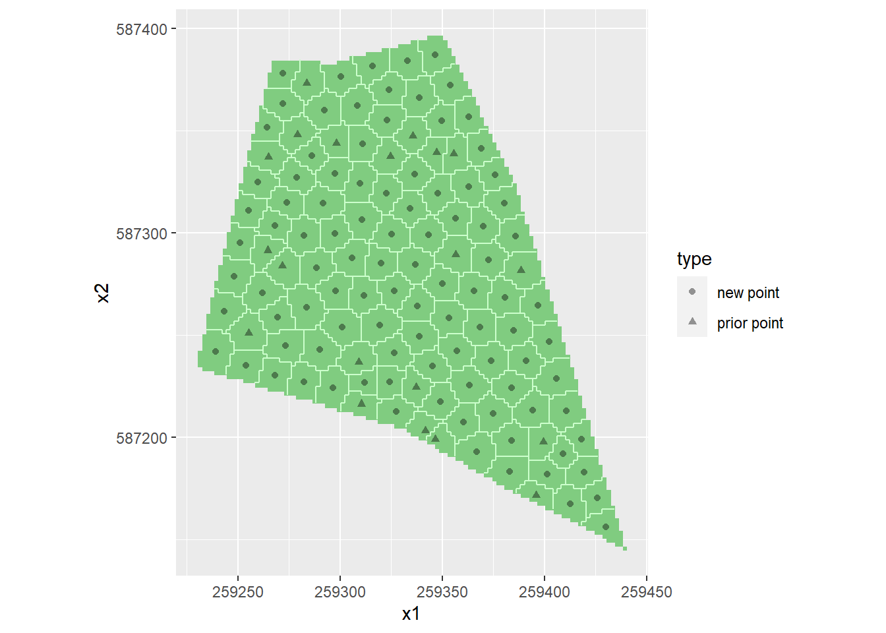
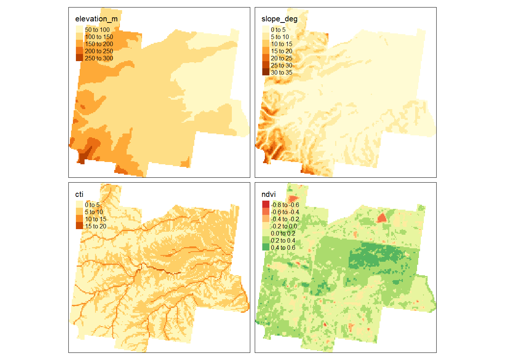

Chapter 7 Echantillonnage pour la cartographie
7.1 Caractéristiques
Lorsque les paramètres de la population (moyenne ou total, percentiles) à étudier ou pour plusieurs sous-régions n’est pas suffisant
La résolution spatiale requise pour la cartographie est bien plus importante que pour les statstisque globale
Quelles Méthodes de cartographie :
- Méthodes d’interpolation spatiale heuristique : Polygones de Thiessen, triangulation, voisin naturel, distance inverse
- Interpolation spatiale basée sur un modèle stochastique : le krigeage
- Modèle non spatial : modèle de régression linéaire, arbre de régression, forêt aléatoire
7.2 Différents types de plans
Echantillonnage pour la cartographie par interpolation spatiale
- Plans d’échantillonnage géométriques
- Grilles régulières
- Échantillonnage de la couverture spatiale
- Plans d’échantillonnage basés sur des modèles
Echantillonnage pour la cartographie avec des modèles de régression ou par arbres de regression
- stratification de l’espace des covariables
- Échantillonnage par hypercube latin
7.3 La grille systématique
7.3.1 Caractéristiques
Facile à mettre en œuvre
- Bonne couverture spatiale
- La grille ne doit pas être forcément placée au hasard
- Formes : carrées, triangulaires, hexagonales
Pour choisir la résolution
- Le maximum de budget mobilisable
- Un seuil pour l’erreur d’interpollation mais dans ce cas, il est nécessaire de poser des hypothèses sur un modèle de variabilité spatiale
Avec un échantillonnage par grille régulière, la répartition des observations est fixe (carré, triangulaire)
Avec des zones de forme irrégulière, la couverture spatiale est dans la plupart des cas sous-optimal. Elle amène souvent à des problème aux bordures en augmentant ainsi les effets de bords
Une couverture spatiale sous-optimale devient plus problématique lorsque nous disposons de données existantes (données anciennes)
En présence de données existantes, nous voulons remplir les espaces vides
7.3.2 Implémentation
On teste ici les fonctions en prenant la parcelle du package spcosa
Voici l’exemple pour la grille de type régulière à maille carrée. On remarque la présence de zone sans donnée.
# regular
MagrilleReg <- spsample( shpFarmsum ,
type = "regular",
cellsize = 30)
tm_shape(shpFarmsum) +
tm_borders( ) +
tm_shape(MagrilleReg) +
tm_symbols()
Figure 7.1: Grille régulière
Voici l’exemple pour la grille de type régulière carré. On remarque la présence de zone sans donnée.
MagrilleHex <- spsample( shpFarmsum ,
type = "hexagonal",
cellsize = 30)
tm_shape(shpFarmsum) +
tm_borders( ) +
tm_shape(MagrilleHex) +
tm_symbols()
Figure 7.2: Echantillonnage optimisé pour le krigeage
7.4 Echantillonnage spatial optimisé
7.4.1 Définition
Dans cette approche, les \(n\) observations sont réparties de manière optimale au sein de la zone d’étude. Pour cela, on utilise un critère qui minimise la distance entre les observations et les points de la grille régulière de prédiction. La moyenne du carré de la plus courte distance au point j:
\(MCPCD_j = 1/N \sum^N_{i=1}min_j(D_{ij}^2)\)
Le critère \(MCPCD_j\) peut être minmisé en utilisant l’algorithme des K-moyenne
Il existe un package R spcosa de Walvoort, Brus, and Gruijter (2010).
Dans cette appraoche, il n’est pas nécessaire de définir un variogramme a priori pour l’optimisation de la répartition des \(n\) observations. Les strates ainsi définies sont appelées Strates compactes
7.4.2 Mise en oeuvre avec spcosa
La fonction stratify implémente la stratification dite par strate compacte.
# initialize pseudo random number generator
set.seed(700124)
# stratify Farmsum into 50 strata
myStratification <- stratify(shpFarmsum, nStrata = 30)
# plot stratification
plot(myStratification)
Sans option, la commande spcosa::spsample extrait le centroïde des strates obtenues par l’algorithme des K-moyennes.
# sans option, la commande spcosa::spsample extrait le centroïde de la strate.
mySamplingPattern <- spsample(myStratification)
# plot sampling pattern
plot(myStratification, mySamplingPattern)
7.4.3 En présence de données existantes
Supposons l’existance d’un \(k\) échantillons sur la zone
k= 20
set.seed(3)
MonEchAncien <- spsample( shpFarmsum , k , type = "random")
spplot(MonEchAncien)
La commande spcosa::stratify permet de construire les strates compactes en tenant compte de ces observations afin d’optimiser la répartition des échantillons supplémentaires pour la cartographie
#Set number of new sampling locations to be selected
n<-100
#Compute total sample size (existing points + new points)
ntot<-n+k
#Compute geostrata with option priorPoints=priordataEthiopia
set.seed(314)
myStrata <- stratify(shpFarmsum,
cellSize= 2 ,
nStrata = ntot,
priorPoints=MonEchAncien,
nTry=10)
#Select sampling points of infill sample (centres of geostrata)
mySample <- spsample(myStrata)Voici la répartition des points.
#Plot geostrata and sampling points (centres of geostrata)
plot(myStrata, mySample)
7.5 Echantillonnage pour la géostatitique
Dans une récente étude, Wadoux, Marchant, and Lark (2019) propose de rajouter 10 % du nombre total d’observations au plan par couverture spatiale optimisée. Ces points sont positionné à une petite distance de cette sélection au hasard de points.
On définit premièremement la distance \(d\) (20 m dans cette exemple) et le nombre de points \(m\) (10 %)
mySCsample.df <- as(mySamplingPattern, "data.frame") # on extrait ici les coordonnées
h <- 20 # Distance
m <- round( 0.1 * nrow(mySCsample.df)) + 1On tire ensuite au hasard les \(m\) points et on calcule les nouvelles coordonnées afin de placer au hasard le nouveau points sur un cercle de rayon \(d\).
# Specify separation distances and subsample sizes
# Select random subsample from the spatial coverage sample
set.seed(314)
ids <-sample(nrow(mySCsample.df),
size = m)
mySubsample <- mySCsample.df[ids,]
# Select locations in random direction at distances h from subsample
plus <- NULL
dxy <- matrix(nrow=m,ncol=2)
angle<-runif(n = m,
min = 0,
max = 2*pi
)
dxy[,1] <- h * sin(angle)
dxy[,2] <- h * cos(angle)
plus.h<-mySubsample+dxy
mySCsample.df <- rbind(mySCsample.df,plus.h)
mySCsample.df$id <- row.names(mySCsample.df)
coordinates(mySCsample.df) <- ~x1+ x2Voici la représentation du plan d’échantillonnage pour la géostatistique.
tm_shape(shpFarmsum)+ tm_borders()+
tm_shape(mySCsample.df) + tm_symbols()
Figure 7.3: Plan optimisé pour la géostatistique
7.6 Plan optimisé dans l’espace des covariables
7.6.1 Définition
Dans cette partie, l’échantillons doit permettre de calibrer un modèle de regression avec des covariables spatialisées. Il existe de nombreuse méthodes pour sélectionner des unités d’échantillonnage de sorte qu’elle permette d
- cLHS
- Surface response design
7.6.2 Données
Comme présenté dans le chapitre sur les données, nous utilisons un jeu de données consitué de grille décrivant un ensemble de caractéristiques d’une parcelle en Australie.
#Read data with coordinates and other attributes of fine grid (discretization of study area)
load(file="Data/HunterValley4Practicals.RData")
grdHunterValley2 <- grdHunterValley
coordinates(grdHunterValley2) <- c('Easting','Northing')
gridded(grdHunterValley2) <- TRUE
tm_shape(grdHunterValley2) +
tm_raster(col = c("elevation_m","slope_deg","cti","ndvi") )## Variable(s) "ndvi" contains positive and negative values, so midpoint is set to 0. Set midpoint = NA to show the full spectrum of the color palette.
7.6.3 Mise en oeuvre avec l’algorithme K-moyennes
#Set number of sampling locations to be selected
n<-20
#Compute clusters
set.seed(314)
myClusters <- kmeans(scale(grdHunterValley[,c(3,4,6,7)]), centers=n, iter.max=100,nstart=10)
grdHunterValley$clusters <- myClusters$cluster
#Select locations closest to the centers of the clusters
rdist.out <- rdist(x1=myClusters$centers,x2=scale(grdHunterValley[,c(3,4,5,6,7)]))
ids.mindist <- apply(rdist.out,MARGIN=1,which.min)
mySample <- grdHunterValley[ids.mindist,]Dans cette
Il est possible de représenter les unités d’échantillonnage dans l’espace géographique:
ggplot(grdHunterValley) +
geom_tile(mapping = aes(x = Easting, y = Northing, fill = factor(clusters))) +
scale_fill_discrete(name = "cluster") +
geom_point(data=mySample,mapping=aes(x=Easting,y=Northing),size=2) +
scale_x_continuous(name = "") +
scale_y_continuous(name = "") +
coord_fixed() +
theme(legend.position="none")
Figure 7.4: Plan optimisé par K-moyenne sur les covariables, représentation dans l’espace géographique
Mais également dans l’espace des covariables. Ici, on retient l’altitude et le CTI.
ggplot(grdHunterValley) +
geom_point(mapping=aes(y=elevation_m,x=cti,colour=factor(clusters)), size = .51) +
geom_point(data=mySample,mapping=aes(y=elevation_m,x=cti),size=1.5) +
scale_y_continuous(name = "Elevation") +
scale_x_continuous(name = "ndvi") +
theme(legend.position="none")
Figure 7.5: Plan optimisé par K-moyenne sur les covariables, représentation dans l’espace des covariables
ggplot(grdHunterValley) +
geom_point(mapping=aes(y=elevation_m,x=slope_deg,colour=factor(clusters)), size = .51) +
geom_point(data=mySample,mapping=aes(y=elevation_m,x=cti),size=1.5) +
scale_y_continuous(name = "Elevation") +
scale_x_continuous(name = "Slope") +
theme(legend.position="none")
Figure 7.6: Plan optimisé par K-moyenne sur les covariables, représentation dans l’espace des covariables